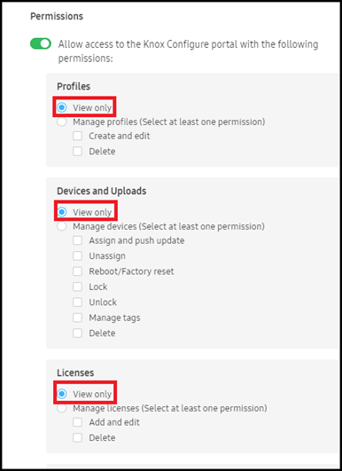
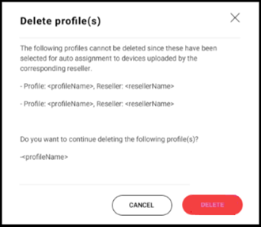
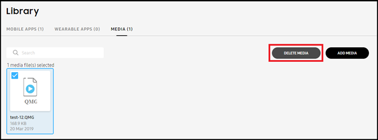
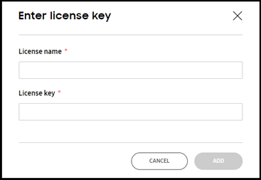

Knox Configure 1.22 release notes
Last updated July 26th, 2023
Knox Configure (KC)
View only administrative permissions added
This KCS enhancement addresses customer requests to assign an administrator view only permissions. Once assigned, no profile configuration, device management, license, or reseller administration is permitted, just view only access.

When a View only radio button is selected, all nested options under that category (Profiles, Devices and Uploads etc.) are disabled. Additionally, if a radio button has nested options and that category does not have View only selected, at least one of its permission checkboxes must also be selected. New roles have View only enabled by default.
Italian console translation available
In response to Italian customer requests, customers and subsidiaries in that country have requested to ability update Italian text with their own regional translations. Impacted areas within the console include:
- Dashboard
- Devices > Devices
- Licenses
- Licenses > Activated Seats description
- Feedback & Support > Resources
- Profiles > Create a profile > Select edition
- Profile editing > Applications and content
- Profile editing > Sound & display
- Library > Media > Actions > Add media > Create animation
Invalid error display on devices not supporting Korea or certain devices
To date, the KC console displays an error message when a customer registers an application to Galaxy apps and doesn’t select Korea from the supported country list or does not select certain devices. With this release, a package name is now added without error when it has registered in Galaxy apps with a StubAPI permission.
Improved error messaging for wearable application verification
To date, an IT admin cannot adequately determine the cause of an app upload failure, since the current messaging is too general to drill-down to specific causes. With this release, both the UX strings and corresponding error code definitions have been refined to be more informative to an actual event and now enable an It admin make more informed corrective actions.
Profile snapshot view enhancements
To date, if a device was configured, or failed to be configured, a profile snapshot displays when a user clicks on the profile name in console’s Devices tab. If the applied profile is not the latest, its version displays in red beside the profile name. However, in snapshot view, there is no difference between latest one and old one, except for a version mark, and the user is often confused as to the correct version.
To resolve this confusion, a note now displays within the snapshot of the old profile stating a newer version of this same profile is available. If needed, a user can update to the newer profile by push update from the snapshot page.
Profile deletion improvements
To date, when a profile is selected from within the console’s Profiles tab, the Delete profiles option is disabled from the Actions drop-down menu, even though the profile is not assigned to a device. The user, not knowing the reason this option is disabled, is understandably confused.

To remedy this situation, the user must consent to the profile deletion within a pop-up message. However, if there any default profiles selected for deletion, a message displays stating they cannot be deleted since they have already been uploaded by the listed reseller.
Media file deletion improvements
To date, admins have been only able to delete a single obsolete or unused media file at a time from the console’s media library. With this release, IT admins can now optimally select and delete multiple media files from within the KC console, as long as the files are not associated with any profiles.

This feature only supports the deletion of multiple qmg formatted media files, and does not include mobile and wearable applications.
Improved console text for similar processes
Inconsistencies have been noticed between the use of BLUETOOTH Enrolled device within the console’s Device log and Uploaded via Bluetooth within the Device details screen. As result, there has been reported confusion as to whether these two text strings are conveying the same message.
To rectify this inconsistency and avoid confusion, Uploaded via Bluetooth has been removed from the Device details screen’s Order number field (and replaced with a tag), and the text string within the Device log is now changed to Device enrolled via Bluetooth using Knox Deployment app. Similar console text refinements have also been made for NFC and Wi-Fi enrollments.
Profile licensing enhancements for KDA enrollment
To date, there’s no option within the KC console to add a license key when configuring a profile to use with the Knox Deployment App (KDA). When configuring a profile in KC, the KNOX DEPLOYMENT APP SETTINGS field License drop-down menu only provides a means to select an existing license for a KDA enrolled KC profile.

To remedy this situation, a new Enter License Key option has been added to the Licenses screen. The Enter License Key option can be selected when there are no profiles available to automatically move to the Enter license key screen. From there, a License name and License Key can be added that then become available for selection from the License drop-down menu.
On this page
Is this page helpful?